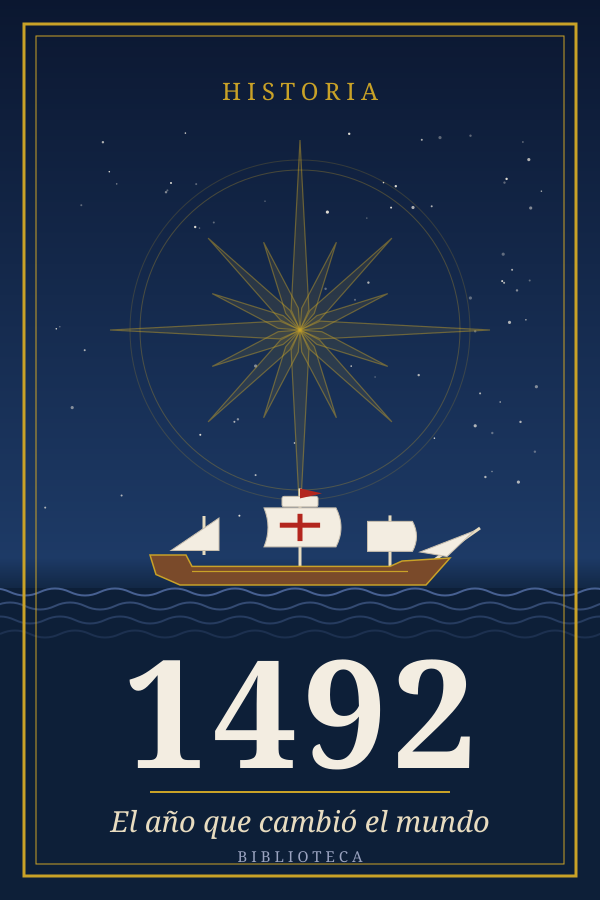
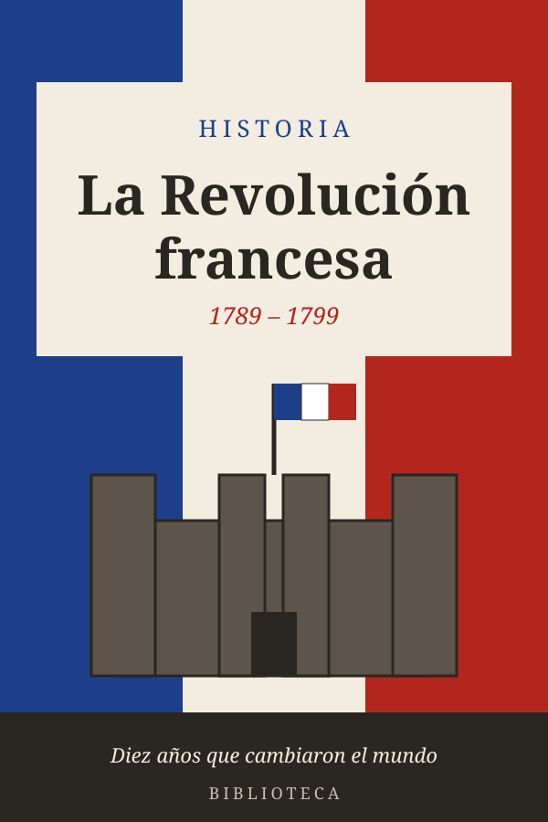
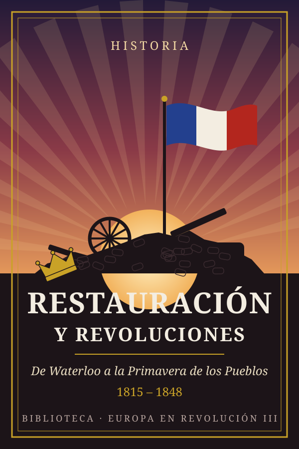

Biblioteca
17 libros · 11 temas · 15 h 10 min de lectura
Historia
en orden cronológico6 libros
218 a. C.–409Hispania romanaSeis siglos de Roma en la península ibérica (218 a. C.–409 d. C.)
 1799–1815NapoleónDel cuartel al trono de Europa (1769–1821)Europa en revolución · 2
1799–1815NapoleónDel cuartel al trono de Europa (1769–1821)Europa en revolución · 2

14921492El año que cambió el mundo
1789–1799La Revolución francesaDiez años que cambiaron el mundo (1789–1799)Europa en revolución · 11799–1815NapoleónDel cuartel al trono de Europa (1769–1821)Europa en revolución · 2

1815–1848Restauración y revolucionesDe Waterloo a la Primavera de los Pueblos (1815–1848)Europa en revolución · 3 1848–1871Hierro y sangreLas unificaciones de Italia y Alemania (1848–1871)Europa en revolución · 4